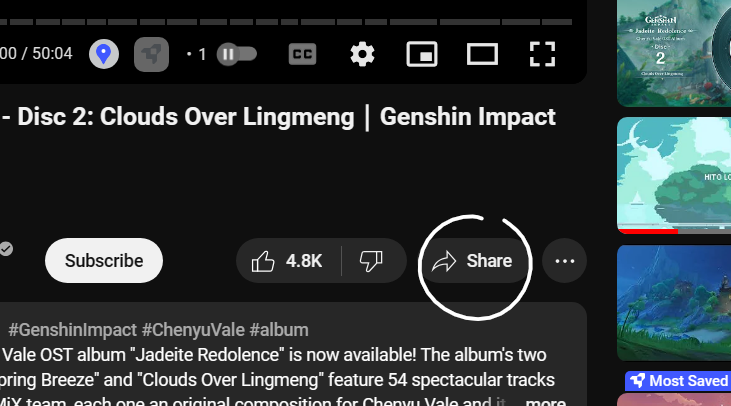
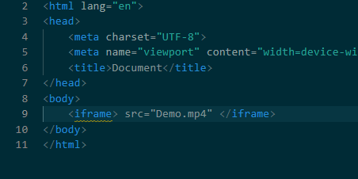
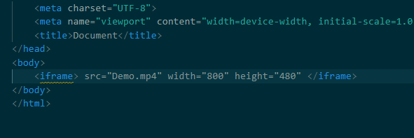
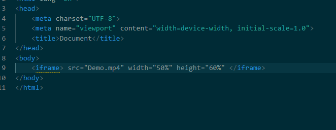

When clicking on a website, some people want visual recordings for that topic.
So on this page, you'll learn a simple way to add videos for your website.
Before you start this lesson, make sure you already have a HTML file that you've created ready, like the file you would have created in Part 1. If you need help making this file, head to Part 1 to learn how to create a HTML file.
In order to go to Part 1, all you need to do is click Pt_1 on the top of the page, second on the nav bar.
This file should be set up, ready for code. If you need help setting the file up, head to Part 2 to set the file up.
In order to go to Part 2, all you need to do is click Pt_2 on the top of the page, third on the nav bar.
When you're working on your website, you'll need to know how to open it onto your web browser. If you need help opening your website in a web browser, head to Part 2.
Once you have finished, you may continue onwards.
First, make sure that you're writing within the space between 'body' and '/body'. Since this lesson is only about videos in particular, we'll only need to write in that space.
If you want to add a video to your website from youtube, this can easily be done since youtube can give an HTML code.
On youtube, next to the like and dislike buttons, there is 'Share'. Clicking on this button will showcase different ways to share the video, including a URL.
Ignore the URL and instead share via 'Embed'. It will give a HTML code that you can simply copy and paste into your file.

You can also insert a video you have a URL to or as a file on your device.
To get a video on your website, type iframe(Remember to type it inbetween < and >). You should notice that the program has automatically added on '/iframe' to your code.
Like images, you'll need to use the source code src, written after iframe but within the self-closing tag, followed by a = sign and then the name of the file in quotation marks. Be sure to use the file extension of that certain video, examples would be .mov, .mp4, .webm or more.
Your code should look something like this.
If the video isn't the size you want it to be, this can be changed using the width and height codes.
The width and height codes, which is written as width / height, should be written before the src code, followed by a = sign and then the width and height of the image in quotation marks.
Remember that the number you place for either width or height is the number of pixels you want the computer to use for that image. This means that you should start with a larger number rather then something like 3 pixels.
Your code should look something like this.
The size of the video can also be determined by using percentages of the website size.
By using percentages so that the video will always take that percentage of the website no matter what size, you'll be able to have videos that change sizes for your website.
There is many different codes that you can use to make your video look more fancy. For some extra details you can click on W3Schools, last on the CSS nav bar.
Once you're done, you'll have a HTML website with videos, allowing others to visually watch your subject.
To learn about how to add a CSS Navigation Bar to your website, click on Pt_5, sixth on the CSS Nav Bar.